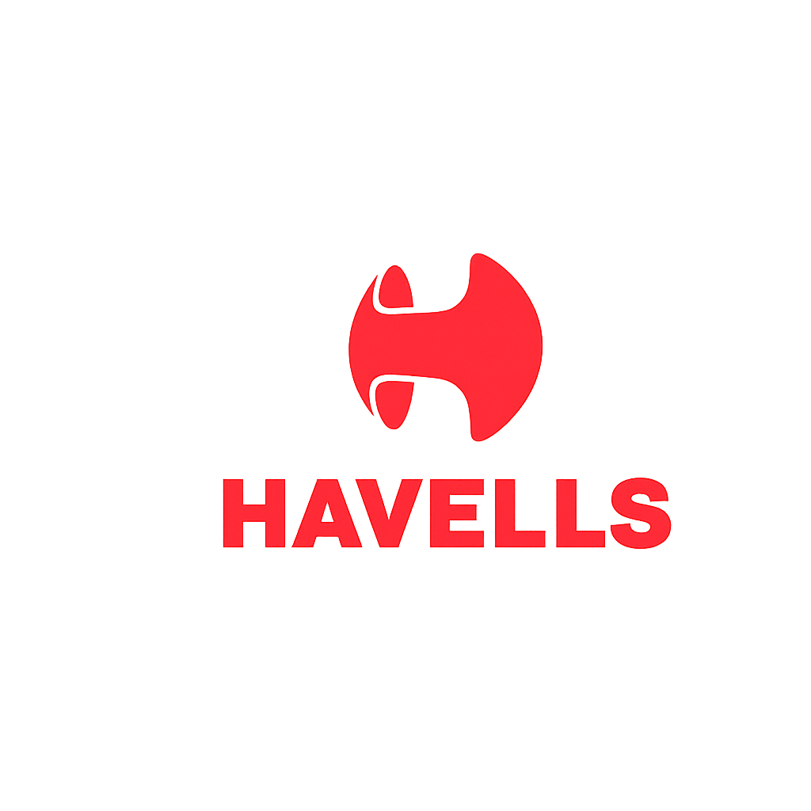

← Back

Smart Pump Selector
Select your mode and fill in the details. We’ll recommend the best pump.
🧑🌾 Simple Mode (सरल मोड)
🧑🔬 Advanced Mode (उन्नत मोड)
Where do you want to put the pump? (आप पंप कहाँ लगाना चाहते हैं?)
Select where to put pump (पंप कहाँ लगाना है चुनें)
For home use (घर के लिए)
For agriculture (कृषि के लिए)
For construction (निर्माण स्थल पर)
Inside shopping mall (शॉपिंग मॉल के अंदर)
Inside multi-story building (मल्टीस्टोरी बिल्डिंग के अंदर)
Why do you need pump (पंप की आवश्यकता क्यों है)
Select why you need pump (पंप की आवश्यकता क्यों है चुनें)
For sewage transfer (सीवेज के लिए)
Water transfer to root tank (पानी को छत की टंकी में ले जाना है)
For water pressure in bathroom/kitchen/Fountain (बाथरूम/रसोई/फव्वारा में पानी प्रेशर के लिए)
For sprinkler (स्प्रिंकलर के लिए)
For farming (खेती के लिए)
Where is the water coming from (पानी कहाँ से आ रहा है)
Select water source (पानी का स्रोत चुनें)
Open well (खुला कुआं)
Borewell (बोरवेल)
River/Bomba (नदी/बॉम्बा)
Underground tank (भूमिगत टैंक)
Municipal pipeline (नगरपालिका पाइपलाइन)
Pond (तालाब)
For hospital sewage (अस्पताल की सीवेज)
For hotels sewage (होटल की सीवेज)
For industry sewage (उद्योग की सीवेज)
For home sewage (घर की सीवेज)
For mall/shopping complex sewage (मॉल/शॉपिंग कॉम्प्लेक्स की सीवेज)
>
From roof tank (छत की टंकी से)
Where is the water coming from for construction (निर्माण के लिए पानी कहाँ से आ रहा है)
Water level from ground (ज़मीन से पानी के लेवल तक गहराई)
Select water level (पानी का लेवल चुनें)
(0–5) foot from ground (०–५ फुट ज़मीन से नीचे)
(5–20) foot from ground (५–२० फुट ज़मीन से नीचे)
(20–28) foot from ground (२०–२८ फुट ज़मीन से नीचे)
(28–50) foot from ground (२८–५० फुट ज़मीन से नीचे)
(50–100) foot from ground (५०–१०० फुट ज़मीन से नीचे)
(100–200) foot from ground (१००–२०० फुट ज़मीन से नीचे)
(200–350) foot from ground (२००–३५० फुट ज़मीन से नीचे)
(350–500) foot from ground (३५०–५०० फुट ज़मीन से नीचे)
(500–700) foot from ground (५००–७०० फुट ज़मीन से नीचे)
Where do you want the water to reach (पानी कहाँ तक पहुंचाना है)
Select delivery location (पानी पहुंचाने की जगह चुनें)
Ground level (जमीन स्तर)
1st floor (~10 ft) (पहली मंजिल)
2nd floor (~20 ft) (दूसरी मंजिल)
3rd floor (~30 ft) (तीसरी मंजिल)
4th floor (~40 ft) (चौथी मंजिल)
Above 4th floor (चौथी मंजिल से ऊपर)
In how many faucets need pressure water (कितने नलों में प्रेशर वाले पानी की आवश्यकता है)
Select faucet count (नलों की संख्या चुनें)
Single faucet (एक नल)
Two faucets (दो नल)
Four faucets (चार नल)
Six faucets (छह नल)
Eight faucets (आठ नल)
Select height from ground (फुट में ऊँचाई चुनें)
Select height (ऊँचाई चुनें)
100 ft from ground (100 फुट)
150 ft from ground (150 फुट)
200 ft from ground (200 फुट)
300 ft from ground (300 फुट)
450 ft from ground (450 फुट)
600 ft from ground (600 फुट)
800 ft from ground (800 फुट)
1000 ft from ground (1000 फुट)
How much water is required (कितना पानी चाहिए)
Select water requirement (पानी की आवश्यकता चुनें)
500L tank in half-an-hour (आधा घंटे में 500 लीटर)
1000L tank in half-an-hour (आधा घंटे में 1000 लीटर)
1500L tank in half-an-hour (आधा घंटे में 1500 लीटर)
2000L tank in one hour (एक घंटे में 2000 लीटर)
3000L tank in one hour (एक घंटे में 3000 लीटर)
One bigha farm in one hour (एक बीघा खेत एक घंटे में)
Three bigha farm in one hour (तीन बीघा खेत एक घंटे में)
Six bigha farm in one hour (छह बीघा खेत एक घंटे में)
Power supply voltage (वोल्टेज सेलेक्ट करें)
Select voltage (वोल्टेज चुनें)
140V - Single phase (कम वोल्टेज)
220V - Single phase (सिंगल फेज)
380V - Two phase (डबल फेज)
415V - Three phase (तीन फेज)
Pump quality required (पंप की क्वालिटी)
Select quality (क्वालिटी चुनें)
Premium (प्रीमियम)
Standard (स्टैंडर्ड)
Economical (किफायती)
Where do you want to put the pump? (आप पंप कहाँ लगाना चाहते हैं?)
Select where to put pump (पंप कहाँ लगाना है चुनें)
For home use (घर के लिए)
For agriculture (कृषि के लिए)
For construction (निर्माण स्थल पर)
Inside shopping mall (शॉपिंग मॉल के अंदर)
Inside multi-story building (मल्टीस्टोरी बिल्डिंग के अंदर)
Which Pump do you need (आपको कौन सा पंप चाहिए)
Select pump type (पंप प्रकार चुनें)
Self Priming mini-monoblock pump
Centrifugale pump
Single stage pressure pump
Multi-stage booster pump
Openwell pump
3inch borewell pump
4inch borewell pump
5inch borewell pump
6inch borewell pump
7inch borewell pump
8inch borewell pump
Shallow well jet pump
deepwell jet pump
Sewage pump
Cutter pump
De-watering pump
In line circulating pump
Control panel for water filled pump
Required HP (आवश्यक हॉर्सपावर)
Select HP (हॉर्सपावर चुनें)
0.5 HP
1.0 HP
1.5 HP
2.0 HP
3.0 HP
5.0 HP
7.5 HP
10 HP
12.5 HP
15 HP
17.5 HP
20.0 HP
25.0 HP
30 HP
Pump Stages (पंप स्टेज)
Select stages (स्टेज चुनें)
1 Stage
2 Stage
3 Stage
4 Stage
6 Stage
7 Stage
8 Stage
9 Stage
10 Stage
12 Stage
13 Stage
14 Stage
15 Stage
16 Stage
18 Stage
20 Stage
21 Stage
22 Stage
24 Stage
25 Stage
27 Stage
30 Stage
32 Stage
35 Stage
40 Stage
50 Stage
Total height (From water level to water discharge) (कुल ऊंचाई [जल स्तर से जल निकास तक])
Required Flow (LPM) (आवश्यक प्रवाह)
🔍 Get Recommendation
🔄 Reset Form
Contact for Customer Support - 9873441650